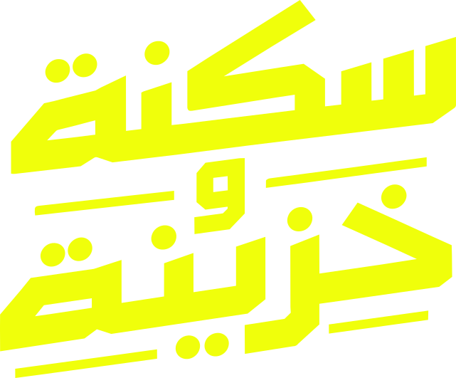
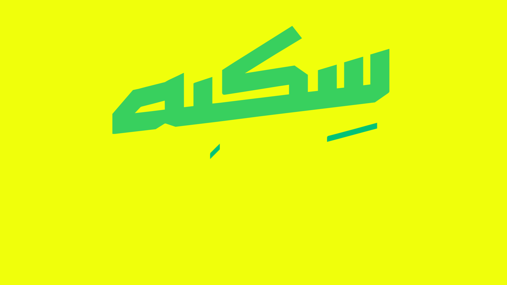
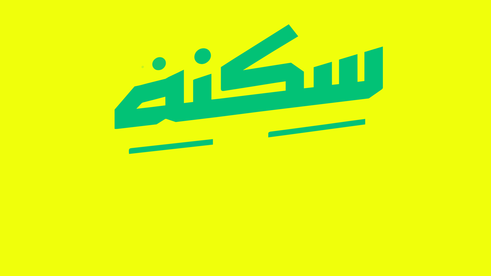
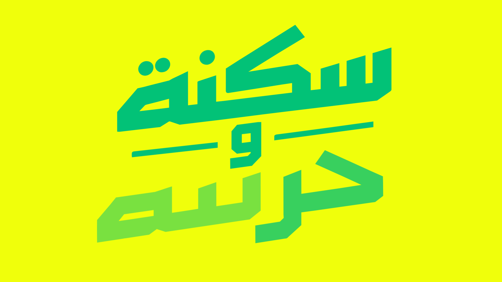
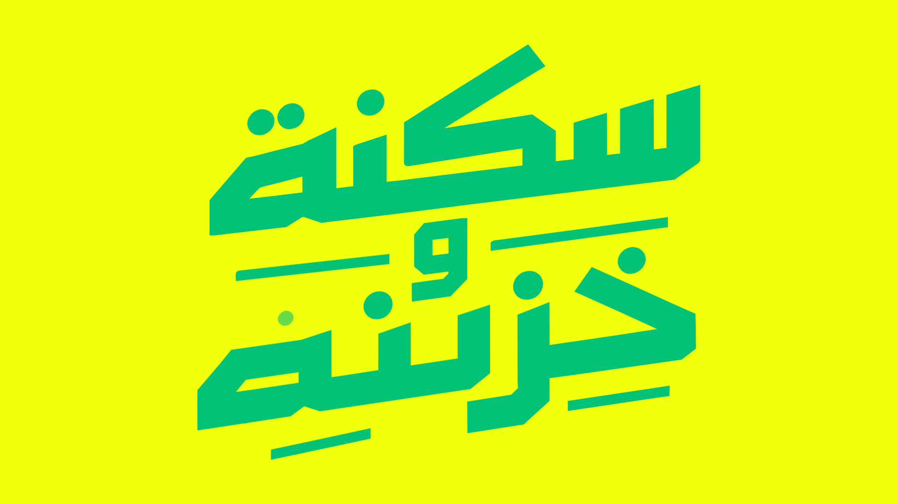
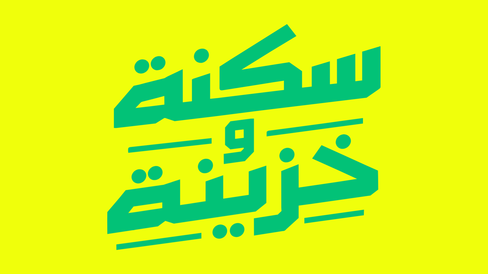
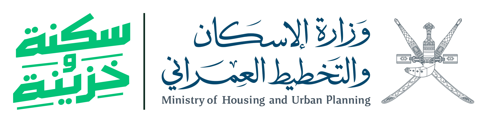

مبادرة سكنة وخزينة تغيّر مفهوم الاستفادة السكنية الحكومية: بدل منحة واحدة تنتهي بها استفادة المواطن، تصبح الاستفادة مرتين.
في النظام السابق كان المواطن يستفيد من المنحة الحكومية مرة واحدة، غالبًا عبر الحصول على أرض، وتنتهي بذلك استفادته السكنية الحكومية.
في سكنة وخزينة تكون الاستفادة الأولى بشراء شقة في مدينة السلطان هيثم. وبعد مرور 5 سنوات من استلام الشقة يُفتح للمستفيد الاستحقاق مرة أخرى.
شراء شقة في مدينة السلطان هيثم.
سكنةالاختيار بين أرض، أو دعم حكومي لوحدة سكنية (شقة أو فيلا).
استحقاق جديدالمسكن. الاستفادة الأولى توفّر للمواطن بيتًا يسكنه: شقة في مدينة السلطان هيثم.
في الهوية: أخضر سكنة — النموّ، الحياة، الاستقرار.
الأصل الذي يبقى. الشقة تظل ملكًا للمستفيد يحتفظ بها أو يبيعها، بينما يعود له حق الاستفادة الحكومية بعد خمس سنوات.
في الهوية: أصفر خزينة — القيمة، الكنز، الادّخار.
حرفٌ مرسوم لا خطٌّ جاهز. كتابة عربية مخصّصة بروح الكوفي الهندسي: مقاطع مستقيمة سميكة، ونهايات مشطوفة، وتكوين يشبه الكتل المعمارية.
① زاوية الصعود ≈ 7.5°. خط القاعدة يرتفع نحو اليمين: ارتقاء وتنامٍ في قيمة الأصل. تصبح هذه الزاوية ثابتًا في النظام كله (الخطوط، الأشرطة، مسارات الحركة).
② طبقتان. «سكنة» فوق و«خزينة» تحتها، بالوزن نفسه: استفادتان متكافئتان على مسار واحد.
③ النقطة (D). العنصر الدائري الوحيد. قُطرها هو وحدة القياس للمساحة الآمنة (D ≈ 5.6% من عرض الشعار)، ومنها جاء موتيف النقاط.
④ الخطوط المسطّرة. تحيط بـ«و» كأنها خط زمني يفصل الاستفادتين (السنوات الخمس)، وتذكّر بطوابق المبنى وسطور دفتر الخزينة.
⑤ الشطف. الزوايا المقطوعة تتحوّل إلى «الزاوية المشطوفة» في البطاقات والعناصر.
النسبة: العرض ÷ الارتفاع = 1.208 · 18 مسارًا متّجهيًا بلون واحد.
D هو قطر نقطة الشعار. اترك حول الشعار من كل الجهات مسافة لا تقل عن قطرَي نقطتين (≈ 11% من عرض الشعار). لا يدخل هذه المساحة نص ولا شعار آخر ولا حافة صفحة.
| الوسيط | أقل عرض |
|---|---|
| الشاشات | 120 px |
| الطباعة | 30 mm |
| الأختام والتطريز | 40 mm |
تحت هذه المقاسات تتلاصق النقاط والخطوط الرفيعة وتضيع.

لون الخلفية الأساسي ولون «الخزينة»: قيمة، ادّخار، ضوء.
لون الشعار الأساسي ولون «السكنة»: نموّ، حياة، استقرار.
قيم HEX/RGB مأخوذة حرفيًا من ملف الشعار المعتمد. *قيم CMYK وPantone مقترحة لأقرب مطابقة، ويجب اعتمادها ببروفة طباعة فعلية؛ الأصفر لون فلوري يقع خارج نطاق CMYK القياسي.
في الواجهات الرقمية تنقلب النسبة: الأبيض والورق للمساحة، والأصفر والأخضر للتمييز والدعوة إلى الإجراء.
الجدول الكامل في brand/design-system/contrast-report.md
بنية كوفية هندسية بزوايا قائمة وفتحات مربّعة، قريبة من روح الشعار دون أن تقلّده. للعناوين والأرقام الكبيرة والشعارات النصية القصيرة.
خط واضح مصمَّم للقراءة على الشاشات والمستندات الرسمية، وأرقامه ثابتة العرض للجداول. للنصوص والنماذج والأسئلة الشائعة والشروط.
بعد مرور خمس سنوات من استلام الشقة يُفتح للمستفيد الاستحقاق مرة أخرى، ويختار بين أرض أو دعم حكومي لوحدة سكنية.
| المستوى | الخط | الحجم / السطر | الاستخدام |
|---|---|---|---|
| عنوان رئيسي | Changa 800 | 72–96 / 1.15 | الإعلانات والصفحة الرئيسية |
| عنوان قسم | Changa 700 | 30–48 / 1.35 | أقسام الصفحات والعروض |
| نص | Plex Arabic 400 | 16–18 / 1.75 | الفقرات والشرح |
| ملاحظة | Plex Arabic 500 | 12–14 / 1.6 | الشروط والهوامش |
خطوط رفيعة بزاوية 7.5° تحت العناوين وفواصل الأقسام. سُمكها = ¼ D.
نقطتان = استفادتان. للتعداد، ومؤشّرات الخطوات، والمحمّل المتحرك.
حافة سفلية ترتفع نحو اليمين بزاوية الشعار؛ لأقسام الواجهة الرئيسية والأغلفة.
قطع زاويتين متقابلتين كما في نهايات الحروف؛ للبطاقات والملصقات.
| نقول | نتجنّب |
|---|---|
| «استفد اليوم بشقة، واستفد مرة أخرى بعد 5 سنوات.» | «احصل على شقتين مجانًا!» |
| «بعد 5 سنوات من استلام الشقة» | «بعد 5 سنوات» دون نقطة البداية |
| «تبقى الشقة ملكك: احتفظ بها أو بِعها لاحقًا» | وعود بعوائد أو أسعار مضمونة |
| «أرض، أو دعم لوحدة سكنية» | مصطلحات قانونية بلا شرح |
الشخصية: واضحة (جملة واحدة لكل فكرة)، مطمئنة (لغة الحقوق لا المنّة)، محفّزة (أفعال أمر قريبة: استفد، اختر، احتفظ). العربية الفصحى المبسّطة هي الأصل، والإنجليزية ترجمة لا العكس.
الشعار حادّ الزوايا؛ لذا تبقى الزوايا صغيرة. الدائرة الكاملة محجوزة لموتيف النقاط.
sm · md · block
| tokens.json | المصدر (صيغة W3C) |
| tokens.css | متغيرات --sk-* |
| tailwind.preset.js | إعداد Tailwind |
| tokens.flat.json | لـFigma والسكربتات |
| components.css | المكوّنات الجاهزة |
| index.html | مرجع حيّ للمكوّنات |
التسمية: --sk-{فئة}-{اسم}-{درجة}
مثال: --sk-color-green-700
غرفتان وثلاث غرف · تسليم 2027
شقة اليوم، واستحقاق جديد بعد 5 سنوات.
| نقطة التوقف | العرض | الأعمدة | الهامش |
|---|---|---|---|
| جوال | < 768 | 4 | 16px |
| لوحي | 768–1279 | 8 | 32px |
| سطح المكتب | ≥ 1280 | 12 | 48px · حاوية 1200 |
الاتجاه dir="rtl"، والخصائص المنطقية (margin-inline-start…) بدل left/right. الأسهم «إلى الأمام» تشير لليسار.
تتحرك العناصر إلى الأعلى على خط زاوية الشعار (7.5°)، بسرعة في البداية واستقرار طويل في النهاية (منحنى ascend). لا شيء يسقط أو يرتدّ بعنف.
نبضة · توقّف · نبضة. كل تسلسل مهم يُبنى على مرحلتين كالاستفادتين، والتوقف بينهما (300ms) هو «السنوات الخمس».
تُرسم الخطوط أولًا من اليمين إلى اليسار (اتجاه القراءة)، ثم يتبعها المحتوى. النقاط تظهر أخيرًا بارتداد خفيف (pop).
| المدة | القيمة | الاستخدام |
|---|---|---|
| instant | 80ms | الضغط والتبديل |
| fast | 160ms | المرور والتركيز |
| base | 240ms | معظم انتقالات الواجهة |
| moderate | 360ms | البطاقات واللوحات |
| slow | 560ms | محتوى الصفحة الرئيسية |
| beat / pause | 600 / 300ms | الإيقاع المزدوج |
| signature | 2400ms | ظهور الشعار |
مع prefers-reduced-motion تتحوّل كل الحركات إلى ظهور فوري، ويُعرض الشعار في وضعه النهائي.






| brand/logo/svg | للويب والتطبيقات |
| brand/logo/png | شفافة · 512 إلى 4096px |
| brand/logo/pdf | متجهية RGB |
| brand/logo/pdf-cmyk | للمطابع |
| brand/logo/ai | Adobe Illustrator |
| brand/logo/cobrand | الشعار المشترك مع الوزارة |
| brand/partners/mhup | شعار الوزارة الرسمي |
| brand/fonts | Changa · IBM Plex Sans Arabic (OFL) |
| brand/design-system | الرموز والمكوّنات |
| brand/motion | الحركة والفيديوهات |